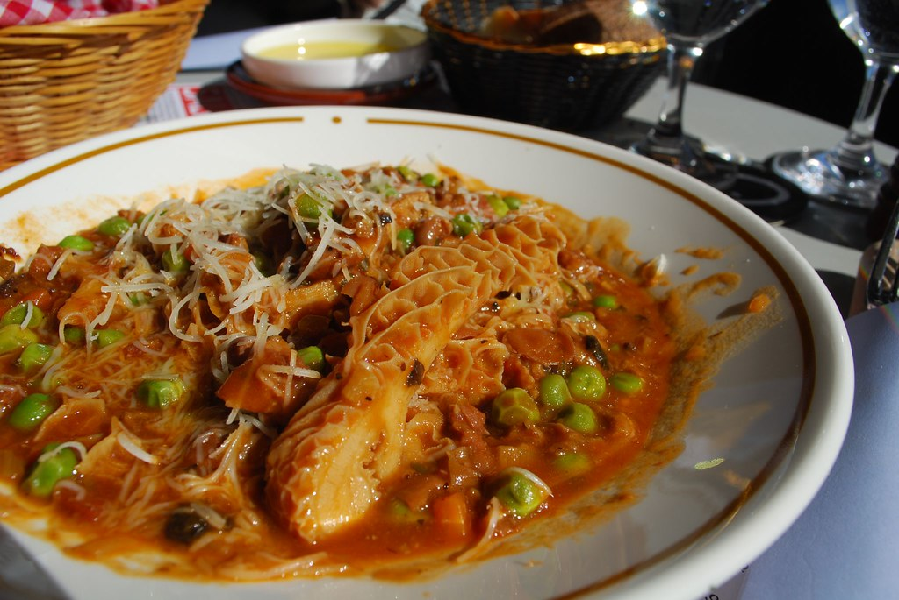

Tomato Sauce

Description
This delicious tomato sauce with peas suits many different dishes.
Traditionally, it's cooked with pasta. I most often use it with pumpkin filled Tortellini.
The peas make a great source of plant-based protein! Great for vegetarian diets.
This recipe makes sauce for two servings.
Ingredients
- Half an onion;
- Two cloves of garlic;
- Olive Oil;
- Two tomato sauce cans (200g each);
- Approximately 200g of frozen peas;
- Salt;
- Pepper;
- Smoked Paprika;
- Oregano;
How to Prepare
- Chop the onion and the Garlic in very small pieces.
- In a small pan, cook the frozen peas in boiling water for about 20 minutes.
- In a separate bigger pan, pour a bit of olive oil in and light the stove on about 200°C.
- Put the chopped onions in the bigger pan and let them sauté for a few minutes.
- When the onion is transparent, add the garlic to the pan too and let them sauté for a minute.
- Put the tomato sauce and the seasoning in the pan and mix it until it boils.
- When the peas are ready, drain the water and mix them with the sauce.
- Let it cook for about 5 minutes.
- Enjoy it with your favorite pasta.